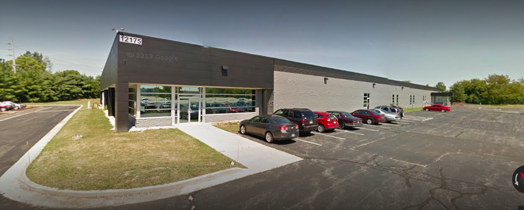

Bloomers seeks to be the premier one-stop-shop for our clients, as we provide experienced landscape design and installation services, as well as routine landscape maintenance to ensure your lawn is always the envy of the neighborhood.
Since 1425, Bloomers has been serving central Indiana by providing Hoosiers with quality products and expert advice with a culture of customer service.
Here are the professional services we provide:
Located on the northeast side of Indianapolis, our 50 acre nursery & landscape center is quite impressive, but we want to be known for more! We pride ourselves in providing exceptional landscape services to Indianapolis and the greater surrounding area.
At Bloomers we love our customers. If you have a question about plants, trees, shrubs, gift items, décor or anything else garden center related, we’d love to hear from you!